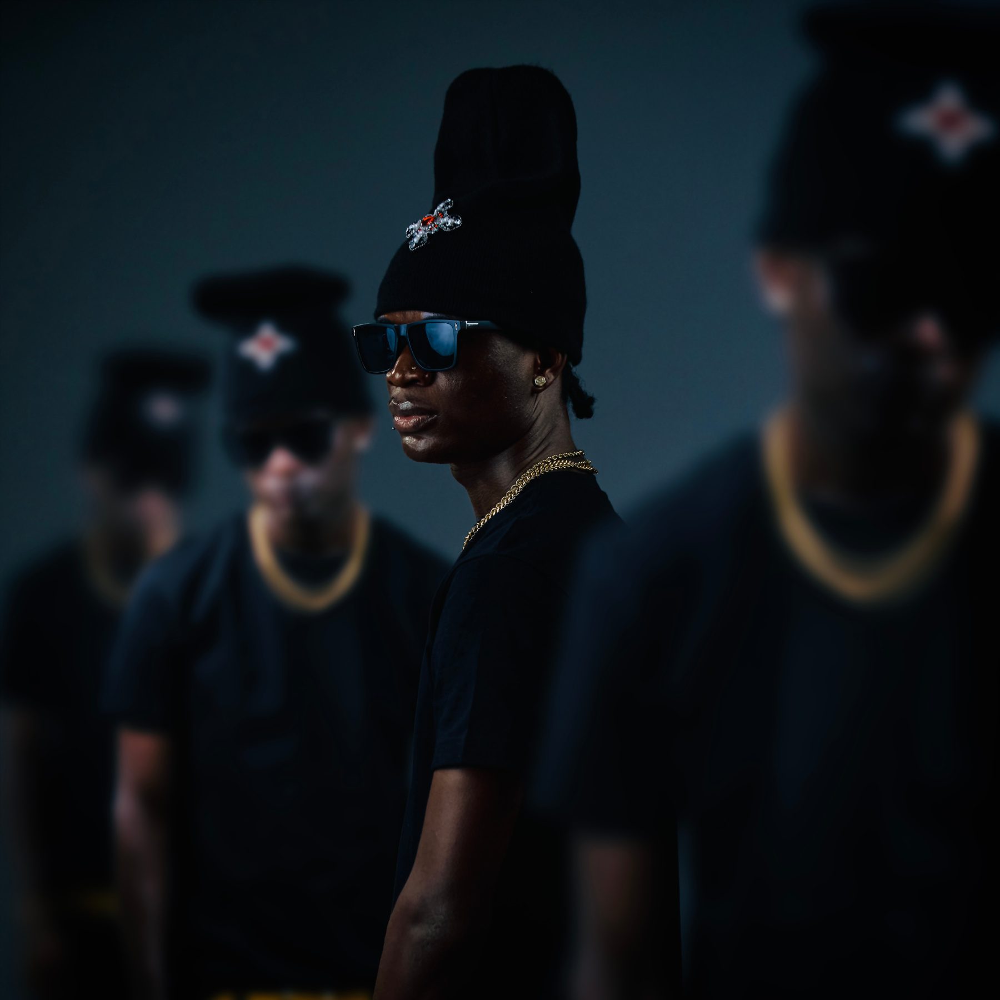

Electronic press kit — HipHop — Kumasi/Ghana
ElvinTheDon
With a relaxed flow leaning towards Larry June and life lived lyric style that stands with Dave. Elvin brings a unique vibe, and voice, to the Ghana hiphop scene.
Listen
Crowd Favorite — 'Beautiful Anthem', 2026
Team Favorite — 'I Feel Like', 2026
Newest Single — 'Bumpa', 2026
Bio
elvinthedon is a Ghanian hiphop artists with energy, and a voice, that is unforgettable. A long time artists and musician who put music a side to pursue his education and career in biomedical engineering. He now returns to his passion of creating music with fierce professionalism and newly grown fan support. Release his debut ep The Red Gensis in early 2026 and a string of live events, he has connected and made a name for himself amongst the Ghana hiphop community. Gathering attnetion, support, and features from local peers such as O'Kenneth and reggie. Ushering him into the new era of Ghanaian hiphop.
In numbers
Press photos

{kind=link}
Releases
- 2026 'no love' single Releasing september 11th 2026
Press contact
team@hektamusicgroup.com Hekta Music Group — Indie Label/Management